관광 명소 15곳
사진은 Wikimedia Commons에 공개된 실제 촬영본이며, 저작자와 라이선스를 각 사진 아래에 적었습니다. 촬영한 날씨·시기·구도에 따라 실제 모습은 다를 수 있습니다.
-

사진: karel291 · CC BY 3.0 · Wikimedia Commons 리가 구시가지Vecrīga / Rīgas vēsturiskais centrs
대성당 첨탑과 옛 상인 주택이 공존하는 역사 중심지.
자세히 보기
한자동맹 교역의 기억과 독일·스웨덴·러시아 지배기의 건축층이 하나의 도시에 겹쳐 있다. 1997년 유네스코 세계유산으로 등재.
- 방문 유의사항
- 구도심은 도보 관람에 적합하다. 교회 전망대·전시관 입장료와 운영시간은 방문 전에 별도 확인.
출처: latvia.travel
-

사진: Geogrfr3ak · CC0 · Wikimedia Commons 검은머리전당Melngalvju nams
정교한 붉은 벽돌과 장식 박공이 상징적인 리가 대표 건축물.
자세히 보기
중세 상인 길드 건물의 역사를 지니지만 제2차 세계대전 피해 뒤 1990년대에 재건된 현 건축물이므로 복원·원형을 구분해서 소개해야 한다.
- 방문 유의사항
- 내부 전시·행사는 변동 가능.
출처: latvia.travel
-
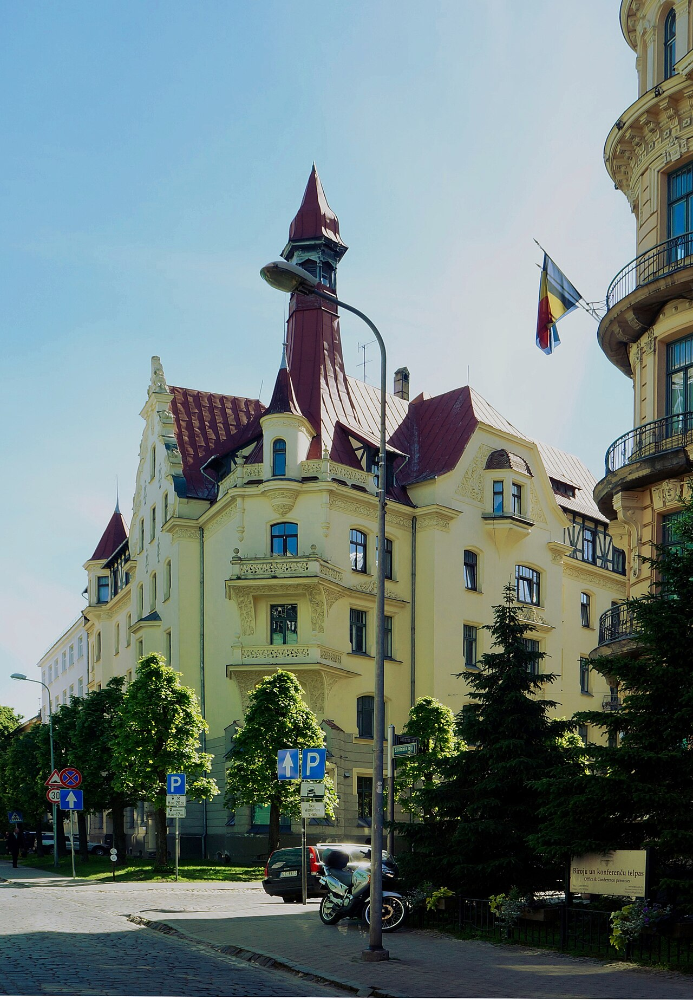
사진: PIERRE ANDRE LECLERCQ · CC BY-SA 4.0 · Wikimedia Commons 리가 아르누보 거리Alberta iela / Rīgas jūgendstils
사람 얼굴과 식물 문양으로 뒤덮인 20세기 초 아르누보 건물군.
자세히 보기
리가의 도시 성장과 1900년 전후 주거 건축의 변화를 보여준다. 구시가지 중세 건축과는 다른 시대의 건축유산.
- 볼거리
- 알베르타 거리의 장식 파사드, 건축가 미하일 에이젠슈테인의 건물, 아르누보 박물관의 실내 장식을 비교한다.
- 방문 유의사항
- 출입 가능한 건물과 사유 주거공간을 구분하고 주민의 사생활을 존중한다.
출처: latvia.travel
-
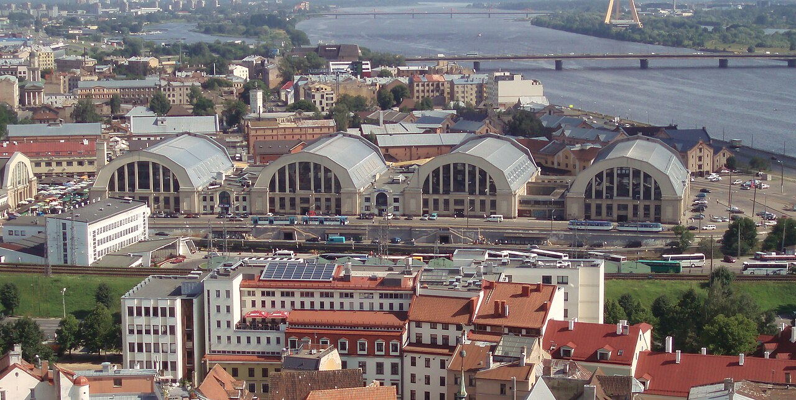
사진: David Holt uploaded and derivative work: MrPanyGoff · CC BY-SA 2.0 · Wikimedia Commons 리가 중앙시장Rīgas Centrāltirgus
항공선 격납고 구조를 재활용한 대형 실내시장.
자세히 보기
도시의 먹거리 유통과 일상생활을 보여주는 공간. 건물의 커다란 아치 구조와 신선식품 매장, 전통 음식 판매가 특징이다.
- 볼거리
- 훈제 생선·호밀빵·유제품·제철 채소 등 식품별 전시와 상인들의 지역별 상품 차이를 관찰한다.
출처: latvia.travel
-
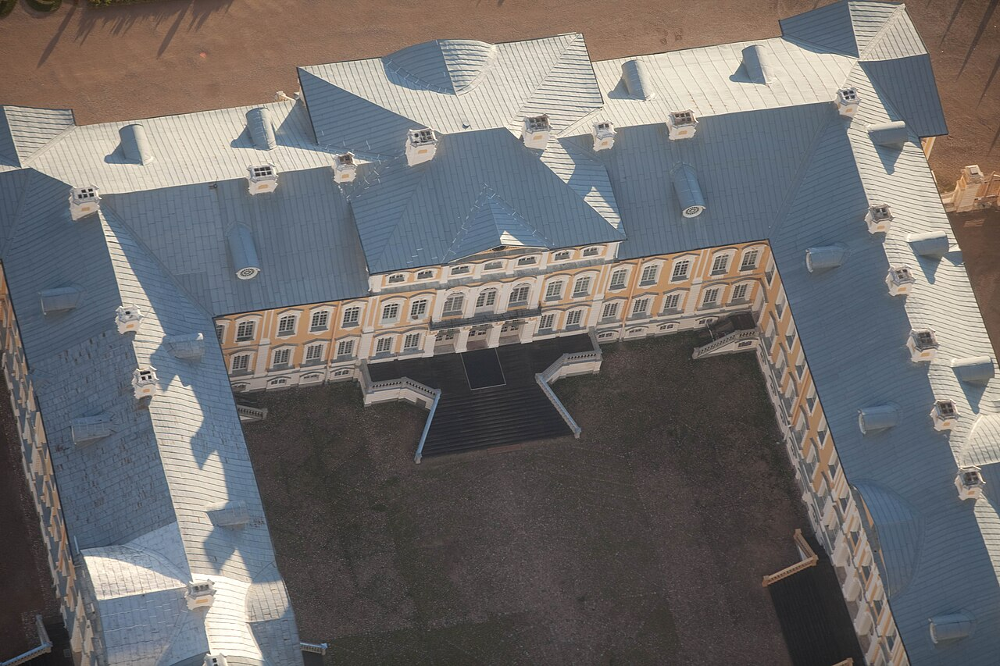
사진: Jeroen Komen · CC BY-SA 2.0 · Wikimedia Commons 룬달레 궁전Rundāles pils
정원과 긴 파사드가 인상적인 발트의 바로크 궁전.
자세히 보기
18세기 쿠를란트 공국 귀족문화의 흔적이며 라스트렐리가 설계에 참여했다.
- 볼거리
- 금박 장식 홀과 로코코 실내, 프랑스식 정원·장미원·대칭축을 통해 건축과 조경을 동시에 보여준다.
- 방문 유의사항
- 리가에서 당일 방문 가능하지만 대중교통 환승이 번거로울 수 있다. 정원은 계절 차이 큼.
출처: latvia.travel
-

사진: User:Yerachmiel C · CC BY-SA 4.0 · Wikimedia Commons 투라이다 성과 시굴다Turaidas pils / Sigulda
가우야 계곡 숲 위로 솟은 붉은 벽돌 성탑.
자세히 보기
중세 리보니아 지역의 성곽 유산으로, 강 계곡의 지형과 붉은 성탑이 함께 보이는 전망이 유명하다.
- 볼거리
- 성탑 전망, 가우야강 계곡의 지형, 성과 지역 전설을 함께 소개하고 자연공원 하이킹과 연결한다.
- 방문 유의사항
- 계곡 도보길·케이블카 운행 여부는 사전 확인.
출처: latvia.travel
-
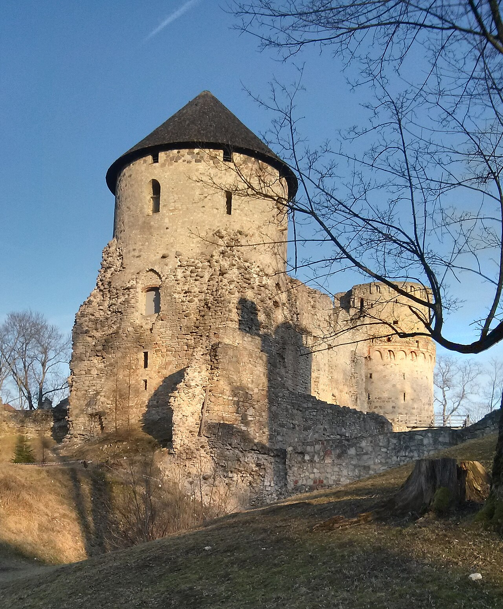
사진: AgrisR · CC BY-SA 4.0 · Wikimedia Commons 체시스 중세 성Cēsu viduslaiku pils
돌성벽과 탑을 가까이 체험할 수 있는 고성 유적.
자세히 보기
리보니아 기사단의 역사와 지역도시 형성 과정을 보여주는 장소. 주변 구시가지와 공원 역시 중세도시의 생활권을 이해하는 데 유용하다.
- 볼거리
- 성벽·탑·성 안뜰과 18~19세기 신성 공간의 대비, 지역 박물관 자료를 중심으로 구성한다.
- 방문 유의사항
- 고성 계단·바닥이 고르지 않을 수 있으므로 야간·우천 관람 안내 필요.
출처: latvia.travel
-
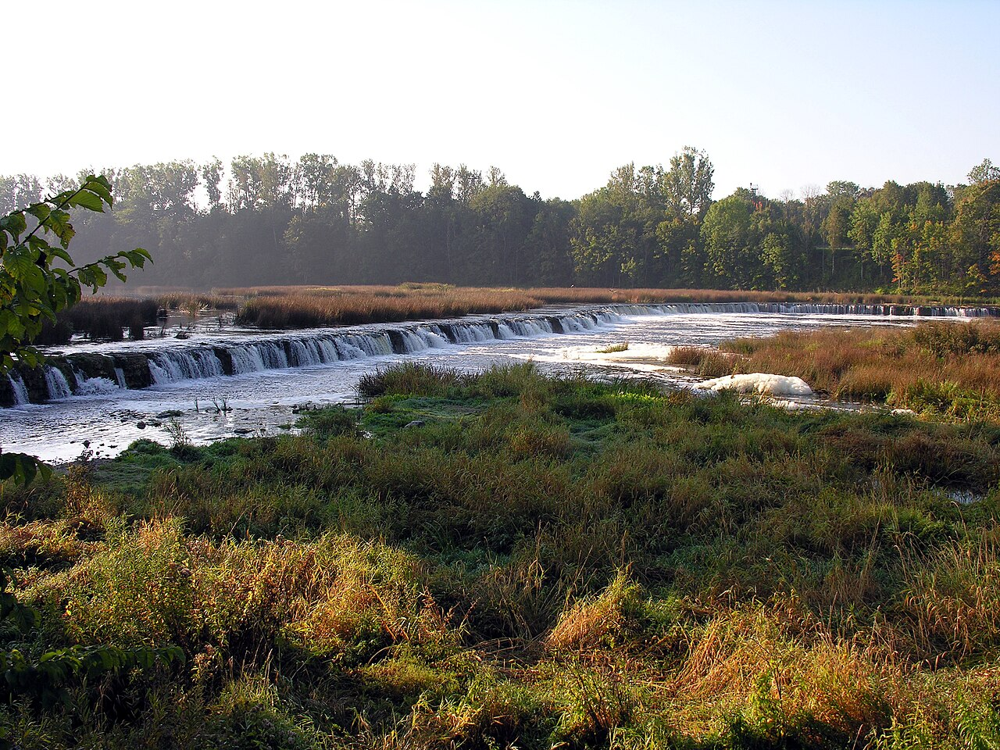
사진: Algirdas · CC BY-SA 3.0 · Wikimedia Commons 쿨디가 구시가지와 벤타 폭포Kuldīgas vecpilsēta / Ventas rumba
고풍스러운 목조거리와 폭이 넓은 폭포가 만나는 마을.
자세히 보기
쿨디가 구시가지는 2023년 유네스코 세계유산으로 등재되었다. 강가의 벤타 룸바는 낮고 넓은 자연폭포로 도시의 독특한 풍경을 만든다.
- 방문 유의사항
- 강변 바위는 미끄럽고 계절에 따라 수량이 달라진다.
출처: latvia.travel
-
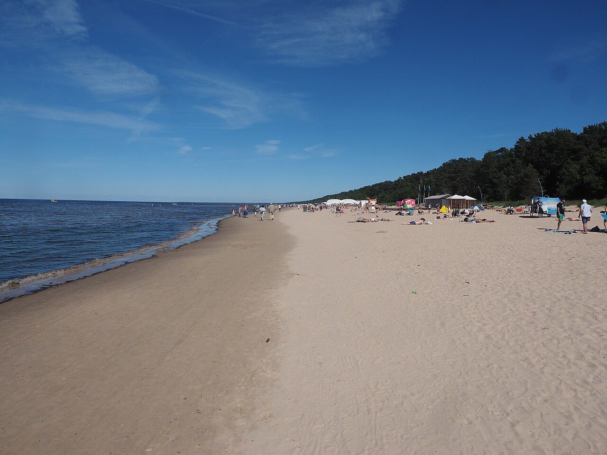
사진: JIP · CC BY-SA 4.0 · Wikimedia Commons 유르말라 해변Jūrmala
긴 백사장과 소나무 숲이 이어지는 리조트 도시.
자세히 보기
리가 근교의 해안 휴양지로, 나무로 지은 여름 별장과 해변 보행 문화가 특징이다.
- 볼거리
- 마요리 해변의 모래·목조 건축·요마스 거리·소나무 숲을 연결해서 도시 휴양 문화를 소개한다.
- 방문 유의사항
- 바닷바람이 강하고 계절에 따라 상점·시설 운영이 달라진다.
출처: latvia.travel
-
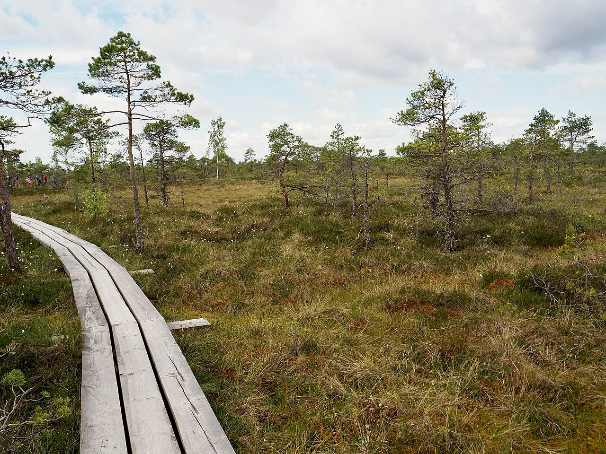
사진: GRID-Arendal · CC BY 2.0 · Wikimedia Commons 케메리 대습지 산책로Ķemeru tīrelis / Ķemeru Nacionālais parks
갈색 습지와 작은 호수를 가로지르는 목재 데크.
자세히 보기
이탄 습지 생태계를 가까이 관찰하는 보호지역으로, 전망대에서 습지의 색과 호수의 패턴이 뚜렷하게 보인다.
- 방문 유의사항
- 보호구역 데크 밖 출입을 피하고 여름 모기·겨울 결빙에 유의한다.
출처: latvia.travel
-
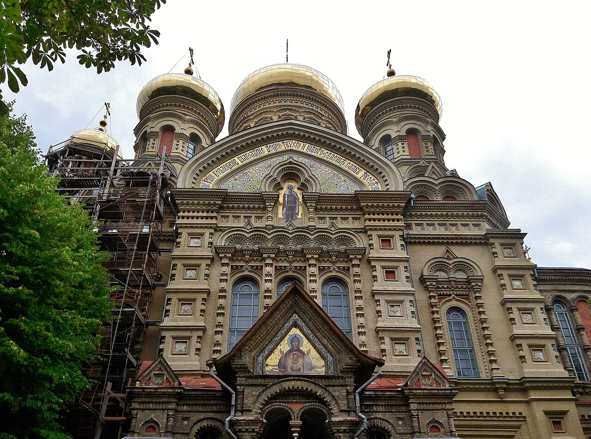
사진: AgrisR · CC BY-SA 4.0 · Wikimedia Commons 리에파야 카로스타·북부요새Karosta / Ziemeļu forti
파도에 닳은 방어 진지가 발트해 해안에 남아 있는 곳.
자세히 보기
제정 러시아 해군 시설에서 비롯된 카로스타 지역은 군사도시의 물리적 유산과 오늘날 문화공간의 전환을 보여준다.
- 볼거리
- 북부요새의 콘크리트 폐허, 정교회 성당, 해군시설을 구분해 소개하고 폭풍의 해안 풍경을 강조한다.
- 방문 유의사항
- 붕괴 위험이 있는 폐허 진입 금지·절벽 및 파도 주의.
출처: latvia.travel
-
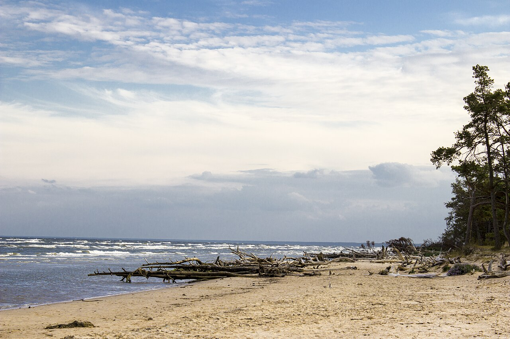
사진: Laima Gūtmane (simka… · CC BY-SA 3.0 · Wikimedia Commons 콜카 곶Kolkasrags
리가만과 발트해가 만나는 모래곶.
자세히 보기
바다와 바람이 만든 해안 지형이 특징이며 리보니아 문화권의 어촌과도 연결된다.
- 볼거리
- 양쪽 수역의 색 차이, 모래곶과 파도, 해안 숲 및 인근 리보니아 마을의 표지판을 소개한다.
- 방문 유의사항
- 강풍과 해류에 주의하며 해수욕지와 곶 끝을 구분한다.
출처: latvia.travel
-
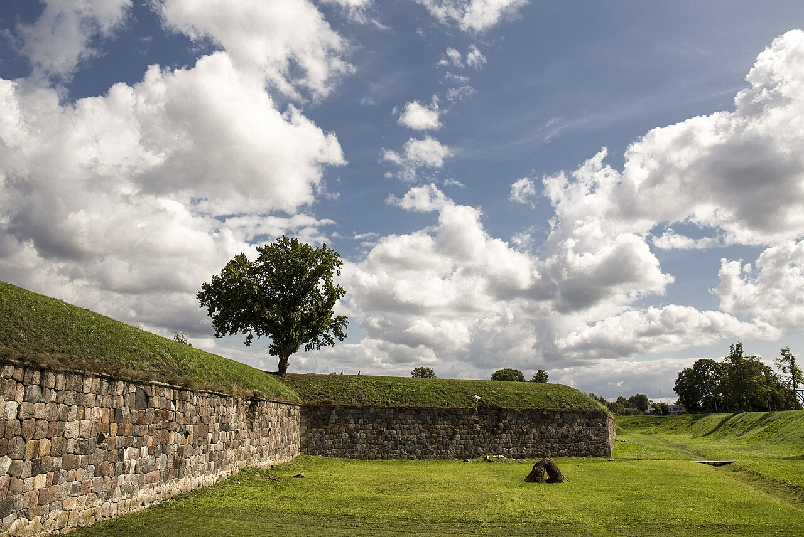
사진: Laima Gutmane · CC BY-SA 4.0 · Wikimedia Commons 다우가프필스 요새와 로트코 미술관Daugavpils cietoksnis / Rotko muzejs
19세기 요새 안에 현대미술관이 자리한 복합 유산.
-
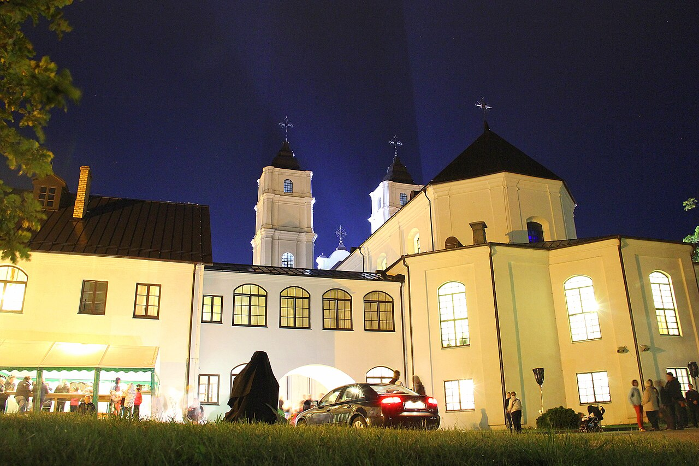
사진: Romualdsb · CC BY-SA 4.0 · Wikimedia Commons 아글로나 대성당Aglonas bazilika
하얀 탑 두 개가 인상적인 가톨릭 순례 중심지.
자세히 보기
라트갈레의 가톨릭 문화와 순례 전통을 이해하는 장소로, 라트비아의 종교적 다양성을 설명하는 데 유용하다.
- 볼거리
- 바실리카 정면과 내부, 8월 순례·축일 전통, 지역의 종교문화를 함께 소개한다.
출처: latvia.travel
-
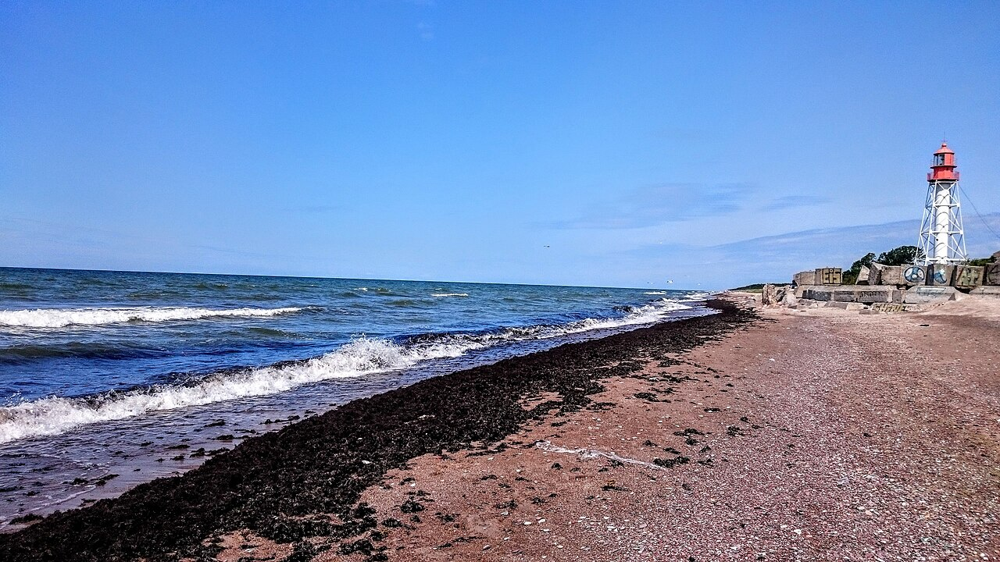
사진: LindaLinda · CC BY-SA 4.0 · Wikimedia Commons 파페 자연공원Papes dabas parks / Papes ezers
사구와 호수, 목초지가 겹치는 발트해 습지 생태계.
자세히 보기
- 볼거리
- 초지·호수·해안사구를 구분하고 계절별 새 관찰과 환경보호의 중요성을 설명한다.
- 방문 유의사항
- 일부 지역은 야생동물 서식지이므로 출입제한과 동물 보호 규정 확인.
출처: latvia.travel
여행 전에 확인하세요
운영시간·입장료·예약·개방 여부는 계절과 상황에 따라 바뀝니다. 방문 전에 각 명소의 공식 안내에서 다시 확인하세요. 카드의 "자세히 보기"에 참고한 출처를 적었습니다.